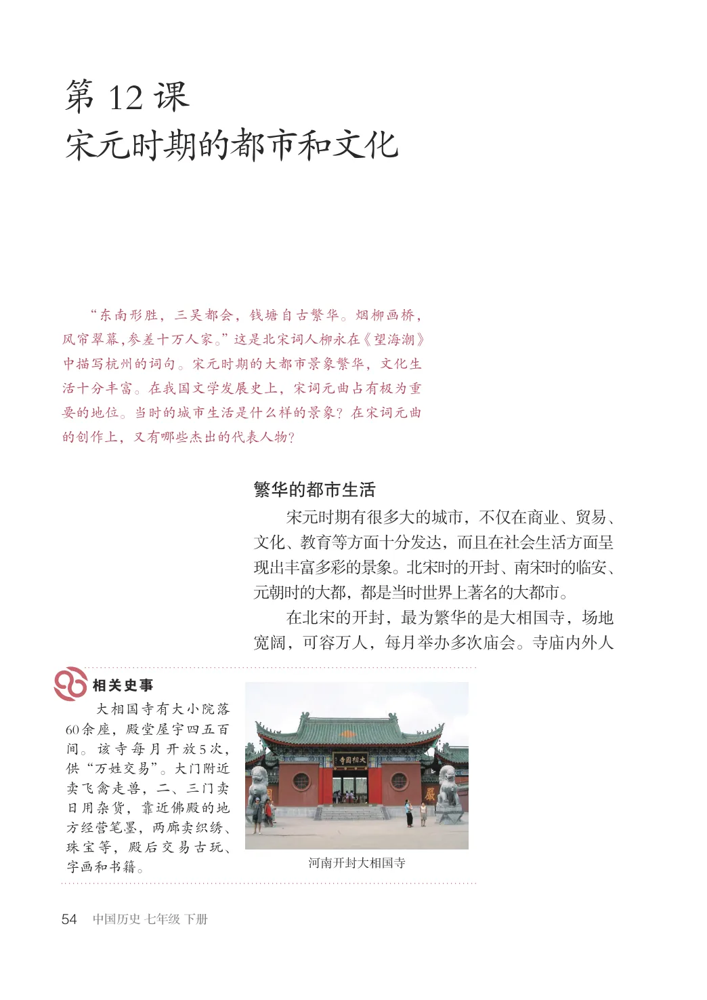
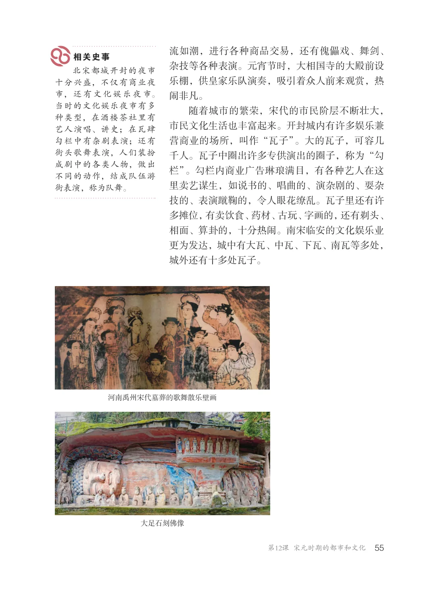
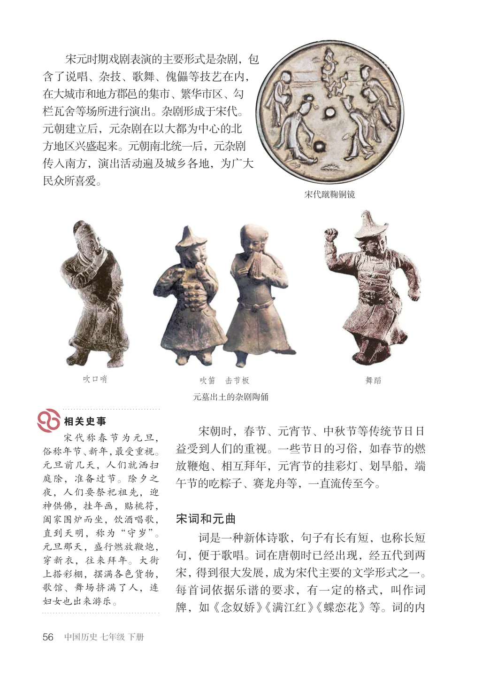
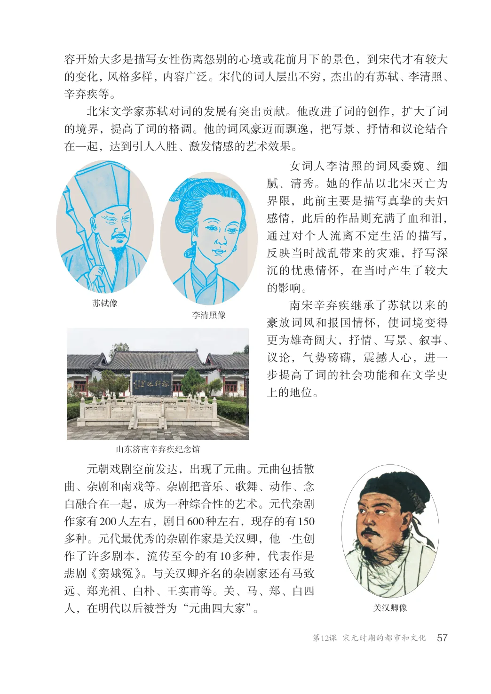
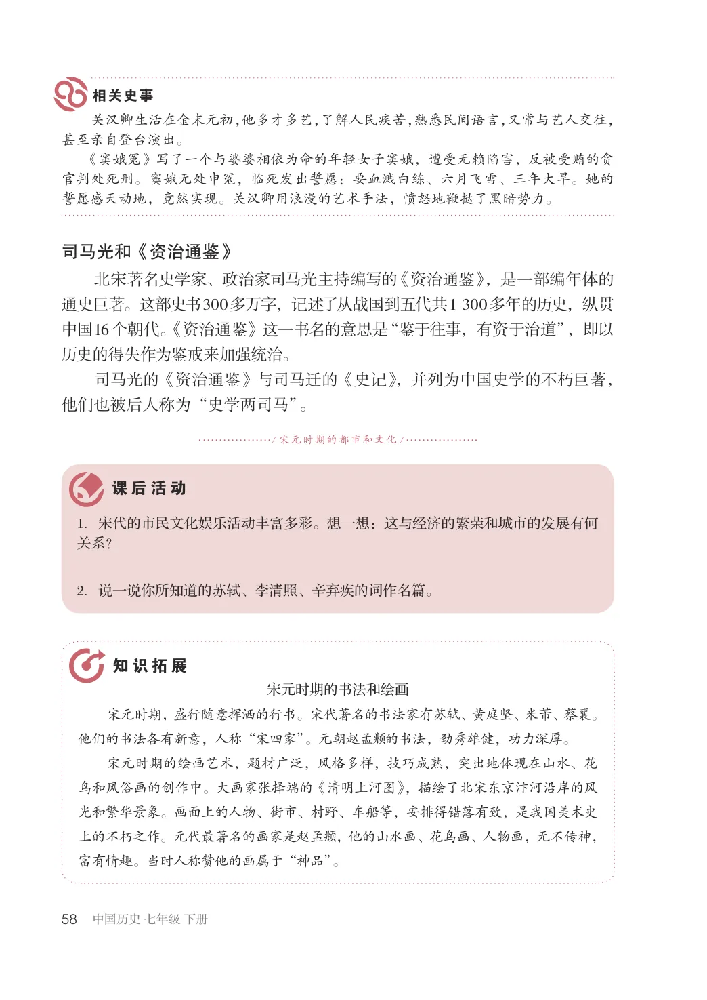

第2单元 · 教材第 54–58 页
第12课 宋元时期的都市和文化
文字版依据教材 PDF 文本层整理；复杂地图、图表及版面关系请以右侧教材原页为准。
“东南形胜，三吴都会，钱塘自古繁华。烟柳画桥，风帘翠幕，参差十万人家。”这是北宋词人柳永在《望海潮》中描写杭州的词句。宋元时期的大都市景象繁华，文化生活十分丰富。在我国文学发展史上，宋词元曲占有极为重要的地位。当时的城市生活是什么样的景象？在宋词元曲的创作上，又有哪些杰出的代表人物？
繁华的都市生活
宋元时期有很多大的城市，不仅在商业、贸易、文化、教育等方面十分发达，而且在社会生活方面呈现出丰富多彩的景象。北宋时的开封、南宋时的临安、元朝时的大都，都是当时世界上著名的大都市。在北宋的开封，最为繁华的是大相国寺，场地宽阔，可容万人，每月举办多次庙会。寺庙内外人
大相国寺有大小院落60余座，殿堂屋宇四五百间。该寺每月开放5次，供“万姓交易”。大门附近卖飞禽走兽，二、三门卖日用杂货，靠近佛殿的地方经营笔墨，两廊卖织绣、珠宝等，殿后交易古玩、字画和书籍。
河南开封大相国寺

相关史事流如潮，进行各种商品交易，还有傀儡戏、舞剑、杂技等各种表演。元宵节时，大相国寺的大殿前设乐棚，供皇家乐队演奏，吸引着众人前来观赏，热闹非凡。
北宋都城开封的夜市十分兴盛，不仅有商业夜市，还有文化娱乐夜市。当时的文化娱乐夜市有多种类型，在酒楼茶社里有艺人演唱、讲史；在瓦肆勾栏中有杂剧表演；还有街头歌舞表演，人们装扮成剧中的各类人物，做出不同的动作，结成队伍游街表演，称为队舞。
随着城市的繁荣，宋代的市民阶层不断壮大，市民文化生活也丰富起来。开封城内有许多娱乐兼营商业的场所，叫作“瓦子”。大的瓦子，可容几千人。瓦子中圈出许多专供演出的圈子，称为“勾栏”。勾栏内商业广告琳琅满目，有各种艺人在这里卖艺谋生，如说书的、唱曲的、演杂剧的、耍杂技的、表演蹴鞠的，令人眼花缭乱。瓦子里还有许多摊位，有卖饮食、药材、古玩、字画的，还有剃头、相面、算卦的，十分热闹。南宋临安的文化娱乐业更为发达，城中有大瓦、中瓦、下瓦、南瓦等多处，城外还有十多处瓦子。
河南禹州宋代墓葬的歌舞散乐壁画
大足石刻佛像

宋元时期戏剧表演的主要形式是杂剧，包含了说唱、杂技、歌舞、傀儡等技艺在内，在大城市和地方郡邑的集市、繁华市区、勾栏瓦舍等场所进行演出。杂剧形成于宋代。元朝建立后，元杂剧在以大都为中心的北方地区兴盛起来。元朝南北统一后，元杂剧传入南方，演出活动遍及城乡各地，为广大民众所喜爱。
宋代蹴鞠铜镜
吹笛击节板
元墓出土的杂剧陶俑
宋朝时，春节、元宵节、中秋节等传统节日日益受到人们的重视。一些节日的习俗，如春节的燃放鞭炮、相互拜年，元宵节的挂彩灯、划旱船，端午节的吃粽子、赛龙舟等，一直流传至今。
宋代称春节为元旦，俗称年节、新年，最受重视。元旦前几天，人们就洒扫庭除，准备过节。除夕之夜，人们要祭祀祖先，迎神供佛，挂年画，贴桃符，阖家围炉而坐，饮酒唱歌，直到天明，称为“守岁”。元旦那天，盛行燃放鞭炮，穿新衣，往来拜年。大街上搭彩棚，摆满各色货物，歌馆、舞场挤满了人，连妇女也出来游乐。
宋词和元曲
词是一种新体诗歌，句子有长有短，也称长短句，便于歌唱。词在唐朝时已经出现，经五代到两宋，得到很大发展，成为宋代主要的文学形式之一。每首词依据乐谱的要求，有一定的格式，叫作词牌，如《念奴娇》《满江红》《蝶恋花》等。词的内

容开始大多是描写女性伤离怨别的心境或花前月下的景色，到宋代才有较大的变化，风格多样，内容广泛。宋代的词人层出不穷，杰出的有苏轼、李清照、辛弃疾等。
北宋文学家苏轼对词的发展有突出贡献。他改进了词的创作，扩大了词的境界，提高了词的格调。他的词风豪迈而飘逸，把写景、抒情和议论结合在一起，达到引人入胜、激发情感的艺术效果。
女词人李清照的词风委婉、细腻、清秀。她的作品以北宋灭亡为界限，此前主要是描写真挚的夫妇感情，此后的作品则充满了血和泪，通过对个人流离不定生活的描写，反映当时战乱带来的灾难，抒写深沉的忧患情怀，在当时产生了较大的影响。南宋辛弃疾继承了苏轼以来的豪放词风和报国情怀，使词境变得更为雄奇阔大，抒情、写景、叙事、议论，气势磅礴，震撼人心，进一步提高了词的社会功能和在文学史上的地位。
李清照像
山东济南辛弃疾纪念馆
元朝戏剧空前发达，出现了元曲。元曲包括散曲、杂剧和南戏等。杂剧把音乐、歌舞、动作、念白融合在一起，成为一种综合性的艺术。元代杂剧作家有200人左右，剧目600种左右，现存的有150多种。元代最优秀的杂剧作家是关汉卿，他一生创作了许多剧本，流传至今的有10多种，代表作是悲剧《窦娥冤》。与关汉卿齐名的杂剧家还有马致远、郑光祖、白朴、王实甫等。关、马、郑、白四人，在明代以后被誉为“元曲四大家”。
关汉卿像

关汉卿生活在金末元初，他多才多艺，了解人民疾苦，熟悉民间语言，又常与艺人交往，甚至亲自登台演出。《窦娥冤》写了一个与婆婆相依为命的年轻女子窦娥，遭受无赖陷害，反被受贿的贪官判处死刑。窦娥无处申冤，临死发出誓愿：要血溅白练、六月飞雪、三年大旱。她的誓愿感天动地，竟然实现。关汉卿用浪漫的艺术手法，愤怒地鞭挞了黑暗势力。
司马光和《资治通鉴》
北宋著名史学家、政治家司马光主持编写的《资治通鉴》，是一部编年体的通史巨著。这部史书300多万字，记述了从战国到五代共1300多年的历史，纵贯中国16个朝代。《资治通鉴》这一书名的意思是“鉴于往事，有资于治道”，即以历史的得失作为鉴戒来加强统治。司马光的《资治通鉴》与司马迁的《史记》，并列为中国史学的不朽巨著，他们也被后人称为“史学两司马”。
/ 宋元时期的都市和文化/
1．宋代的市民文化娱乐活动丰富多彩。想一想：这与经济的繁荣和城市的发展有何关系？
2．说一说你所知道的苏轼、李清照、辛弃疾的词作名篇。
宋元时期的书法和绘画宋元时期，盛行随意挥洒的行书。宋代著名的书法家有苏轼、黄庭坚、米芾、蔡襄。他们的书法各有新意，人称“宋四家”。元朝赵孟的书法，劲秀雄健，功力深厚。宋元时期的绘画艺术，题材广泛，风格多样，技巧成熟，突出地体现在山水、花鸟和风俗画的创作中。大画家张择端的《清明上河图》，描绘了北宋东京汴河沿岸的风光和繁华景象。画面上的人物、街市、村野、车船等，安排得错落有致，是我国美术史上的不朽之作。元代最著名的画家是赵孟，他的山水画、花鸟画、人物画，无不传神，富有情趣。当时人称赞他的画属于“神品”。
